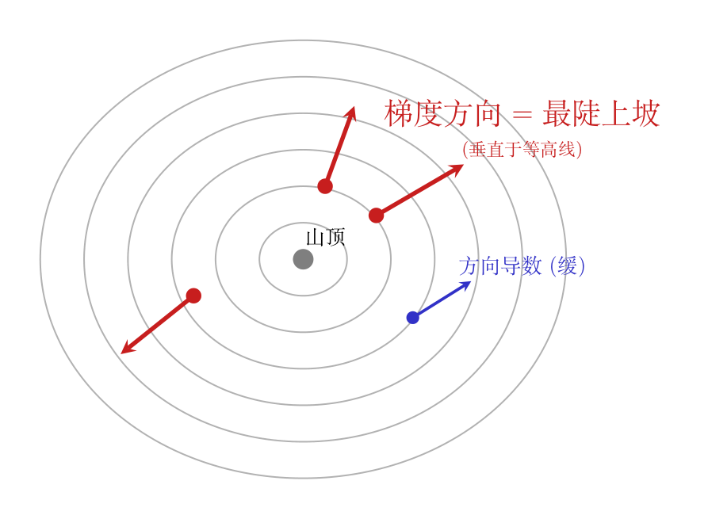

把所有偏导数拼成一个向量——这就是梯度。
$$\nabla f = \left[\frac{\partial f}{\partial x_1}, \frac{\partial f}{\partial x_2}, \ldots, \frac{\partial f}{\partial x_n}\right]$$
核心直觉：梯度向量指向函数值上升最快的方向。
画面： 你站在山谷里，四周都是坡。你原地转一圈，总有一个方向是最陡的上坡——那就是梯度指的方向。梯度的大小 = 那个方向的坡度有多陡。梯度的反方向 = 最陡的下坡路。

第一步：方向导数的定义。
你站在 $(x, y)$ 点，选一个方向 $\mathbf{u} = (u_x, u_y)$（单位向量，模=1）。往前走 $\epsilon$ 步——也就是 $x$ 变到 $x + \epsilon u_x$，$y$ 变到 $y + \epsilon u_y$。函数值变了多少？
$$D_{\mathbf{u}} f = \lim_{\epsilon \to 0} \frac{f(x + \epsilon u_x,\; y + \epsilon u_y) - f(x, y)}{\epsilon}$$符号拆解：$D_{\mathbf{u}} f$——$D$ 是导数（Derivative），下标 $\mathbf{u}$ 是方向向量。跟偏导数对比：
这就是方向导数的定义。如果你选的方向是 $(1, 0)$（沿 $x$ 轴走），方向导数就退化成普通偏导数 $\partial f / \partial x$。
第二步：把方向导数拆成偏导数的组合，推出公式。
关键技巧——把「沿斜线走一步」拆成「先沿 $x$ 走一步，再沿 $y$ 走一步」：
$$ \begin{aligned} f(x + \epsilon u_x, y + \epsilon u_y) - f(x, y) &= \underbrace{[f(x + \epsilon u_x, y + \epsilon u_y) - f(x, y + \epsilon u_y)]}_{\text{纯 x-变化量}} + \underbrace{[f(x, y + \epsilon u_y) - f(x, y)]}_{\text{纯 y-变化量}} \end{aligned} $$几何直觉——为什么可以这样拆？
你现在站在点 $A = (x, y)$，想到达点 $B = (x + \epsilon u_x, y + \epsilon u_y)$。直接走是斜线，不好算偏导数。但我们可以绕路——在任何一座山上，不管走直线还是绕弯，只要起点终点一样，总高度差就一样。
绕路方案：$A \to C \to B$——先竖直走到中间站 $C = (x,\; y + \epsilon u_y)$，再水平走到终点 $B$：
C ●──────────● B
│ ↗
εu_y │ ↗ 沿 x 方向走 εu_x（用 ∂f/∂x 算）
│ ↗
↓ ↗
●──→
A(x,y)
└─ εu_x ─┘
因为是纯水平+纯竖直，每一步都只有一个变量在变——退化成了 00-11 学过的偏导数：
两项加起来就是绕路的总高度差。绕路不改变高度差——所以 $f(B)-f(A)$ 就等于这两项之和。这个「强行塞一个中间站，把斜线拆成两段直线」的技巧，数学里叫加一项减一项。
当 $\epsilon \to 0$ 时：
全部代入方向导数的定义：
$$D_{\mathbf{u}} f = \lim_{\epsilon \to 0} \frac{\epsilon u_x \frac{\partial f}{\partial x} + \epsilon u_y \frac{\partial f}{\partial y}}{\epsilon} = u_x \frac{\partial f}{\partial x} + u_y \frac{\partial f}{\partial y} = \nabla f \cdot \mathbf{u}$$结论：方向导数 = 梯度 · 方向向量。这不是直接甩公式——是从定义出发，拆成偏导数组合，一步步推出来的。到这里还没有用到任何「最快」的说法，只是推导出了一个计算任意方向变化率的公式。
第三步：用点乘的几何意义回答「哪个方向最快」。
有了 $D_{\mathbf{u}}f = \nabla f \cdot \mathbf{u}$ 之后，看它的几何含义：
$$\nabla f \cdot \mathbf{u} = \|\nabla f\| \cdot \|\mathbf{u}\| \cdot \cos\theta = \|\nabla f\| \cdot \cos\theta$$（$\|\mathbf{u}\|=1$ 因为 $\mathbf{u}$ 是单位向量。$\theta$ 是梯度和你的方向 $\mathbf{u}$ 之间的夹角。）
推导链完整：定义 → 拆成偏导数组合 → 推出 $\nabla f \cdot \mathbf{u}$ → 点乘在 $\theta=0°$ 最大 → 所以梯度方向最快。每一步都有出处，没有循环。
用 $f(x,y) = x^2 + 3xy + y^3$，在点 $(2, 3)$ 处：
# 00-12 代码验证：方向导数 = ∇f·u，在梯度方向取最大值
# 导入numpy——用于向量运算（范数、点乘、单位化）
import numpy as np
# 定义二元函数 f(x,y)=x²+3xy+y³
def f(x, y):
"""f(x,y) = x² + 3xy + y³"""
return x**2 + 3*x*y + y**3
# 梯度函数——返回 [∂f/∂x, ∂f/∂y]（从 00-11 偏导数规则）
# ∂f/∂x = 2x + 3y（y当常数），∂f/∂y = 3x + 3y²（x当常数）
def grad_f(x, y):
"""返回梯度向量 ∇f = [∂f/∂x, ∂f/∂y]"""
return np.array([2*x + 3*y, 3*x + 3*y**2])
# 测试点 (x₀, y₀) = (2, 3)——代入梯度：∂f/∂x=4+9=13, ∂f/∂y=6+27=33
x0, y0 = 2.0, 3.0
# grad：梯度向量 [13, 33]——指向上升最快的方向
grad = grad_f(x0, y0)
print(f"梯度 ∇f = [{grad[0]}, {grad[1]}]")
# 梯度方向——把梯度向量单位化（方向不变，长度缩到 1）
# np.linalg.norm(grad)：梯度的模 = √(13²+33²)
u_grad = grad / np.linalg.norm(grad)
print(f"梯度方向 u_grad = [{u_grad[0]:.4f}, {u_grad[1]:.4f}]")
# 方向导数 = ∇f · u（点乘）
# 沿梯度方向：cosθ=1 → D_u f = ‖∇f‖
D_grad = np.dot(grad, u_grad)
print(f"沿梯度方向的方向导数 = {D_grad:.4f}")
print(f"梯度模 ‖∇f‖ = {np.linalg.norm(grad):.4f}")
print(f"两者相等吗？{np.isclose(D_grad, np.linalg.norm(grad))}")
# 随机测试 5 个方向——看看哪个方向导数最大
# np.random.seed：固定随机种子，每次运行结果一致
np.random.seed(42)
print(f"\n{'方向':>12s} {'D_u f':>10s}")
print("-" * 24)
# 记录最大值，看是否被梯度方向拿下
max_D = 0
for i in range(5):
# 生成随机 2D 向量，然后单位化——得到一个随机方向
v = np.random.randn(2)
u = v / np.linalg.norm(v)
# 方向导数 = ∇f 在该方向上的投影 = ∇f·u
D = np.dot(grad, u)
print(f"[{u[0]:6.3f},{u[1]:6.3f}] {D:10.4f}")
# max()：跟踪最大值——最终应该是梯度方向的值最大
max_D = max(max_D, abs(D))
print(f"\n梯度方向的值 = {D_grad:.4f}")
print(f"5个随机方向的最大值 = {max_D:.4f}")
print(f"梯度方向 ≥ 所有随机方向？{D_grad >= max_D}")
输出证实：梯度方向的方向导数等于梯度的模，且大于等于任意随机方向的方向导数——梯度确实是「最陡」的方向。这不是空话，是能在代码里跑通的数学事实。
详细展开见下一课 00-12 梯度下降。